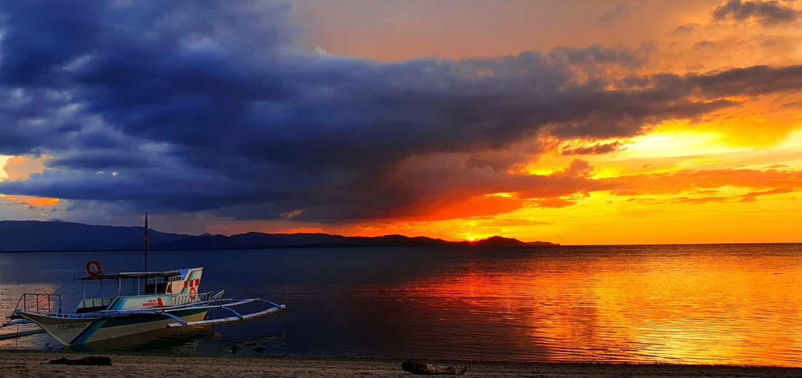
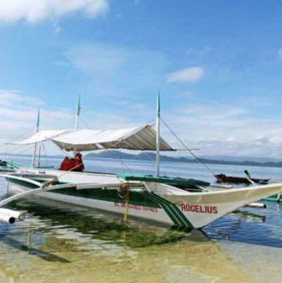
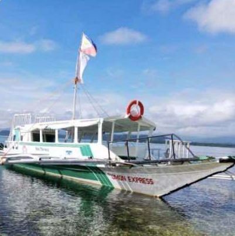

05
Getting Here
Islas Moriones is on the west coast of Maniwaya Island, Santa Cruz, Marinduque. From Metro Manila, travel to General Luna Port in Quezon, then cross by boat.

- 1
Bus from Cubao
Take Superlines or Daet Express from the Cubao terminal. Look for buses signed Aurora / Mulanay / Unisan. The 11:30 PM departure is recommended.
4–6 hoursAir-conditioned bus ₱530Ordinary bus ₱450one way, per person
- 2
Tricycle to General Luna Port
Get off at the General Luna crossing in Quezon and ride a tricycle to the port.
About 10 minutes₱30–50
- 3
Public boat to Maniwaya
One public boat a day leaves General Luna Port for Maniwaya Port.
Departs 9:00–9:30 AMAbout 45 minutes₱250 per person, one way
- 4
Walk to the resort
Islas Moriones is a 5–10 minute walk from Maniwaya Island Port.
- 1
Drive to General Luna Port
Set Waze to General Luna Port, Quezon Province. It's about 230 km via the Pan-Philippine Highway.
4–6 hours
- 2
Through the Bondoc Peninsula
The route passes the Bondoc Peninsula. Make sure you take the right road, and watch for falling rocks.
- 3
Park at the port
At General Luna Port, look for Jun Damian, the Islas Moriones coordinator: 0916 470 3341.
Parking ₱100 / day
- 4
Cross to Maniwaya
Take the public boat (once a day at 9:30 AM, ₱250 per person), or book a private boat that can go straight to the resort at any time of day. Life vests must be worn.
45–60 minutes
- 5
Arrive
From Maniwaya Island Pier, a free boat shuttle takes you to Islas Moriones.
Public transport fares and boat times are from the resort's travel guides and may change. Boat trips depend on the weather and sea conditions.
The resort's private boats
Round trips with island hopping included, from General Luna Port in Quezon or from Alobo/Buyabod Port on mainland Marinduque. Ask the resort for rates.
-

M/V Rogelius
Small boat · up to 6 people
-

M/V St. Longinus
Medium boat · up to 16 people
-

M/V Omon Express
Big boat · up to 25 people
Book Your Stay
Check rates and availability and book direct online. For packages, events and other questions, message or email the resort.